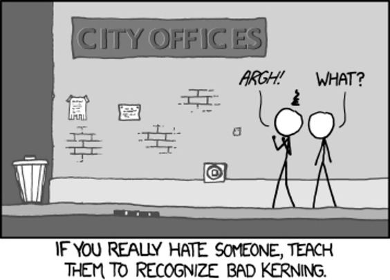

…has two sets of inputs & outputs.
public int add(int x, int y) { return x + y; }
public Program getCurrentProgram(TVGuide guide, int channel) { Schedule schedule = guide.getSchedule(channel); Program current = schedule.programAt(new Date()); return current; }
public boolean processMessages(int n) { int count = InboxManager.process(n); return (count >= 1); }
Are called 'side-effects'.
Are called 'side-causes' and 'side-effects'.
todoList.remaining = function() { var count = 0; angular.forEach(todoList.todos, function(todo) { count += todo.done ? 0 : 1; }); return count; };
todoList.addTodo = function() { todoList.todos.push({text:todoList.todoText, done:false}); todoList.todoText = ''; };
There are no black boxes any more.
Nothing exists in isolation.
Things cannot be plugged together.
public boolean processMessage(Queue queue) {...}
Eliminating & controlling side-effects.
map, reduce, fold …Functional Programming is about eliminating side-effects where you can, controlling them where you can't.
For more: http://blog.jenkster.com/